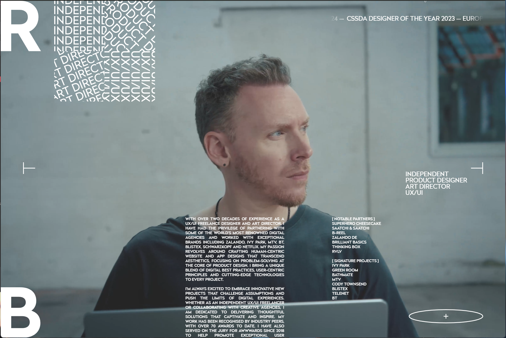
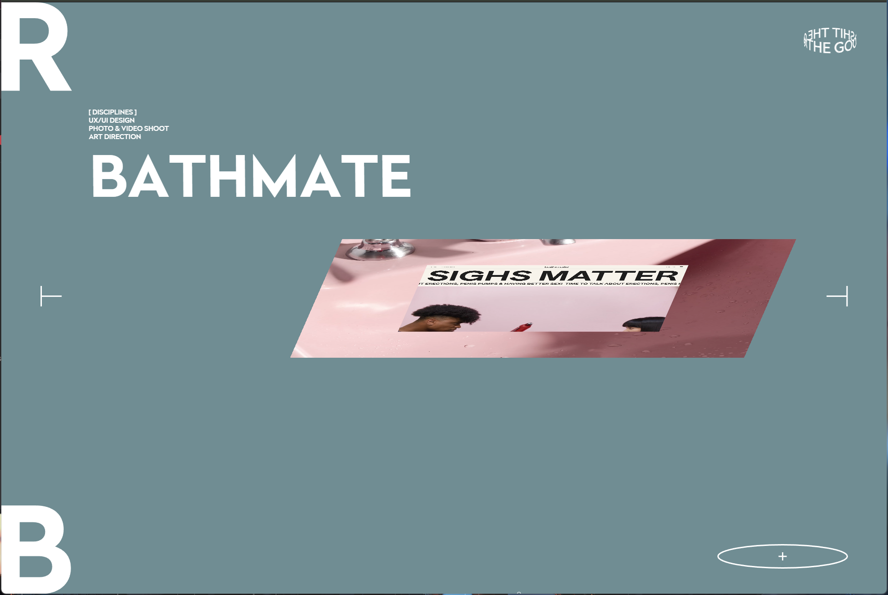
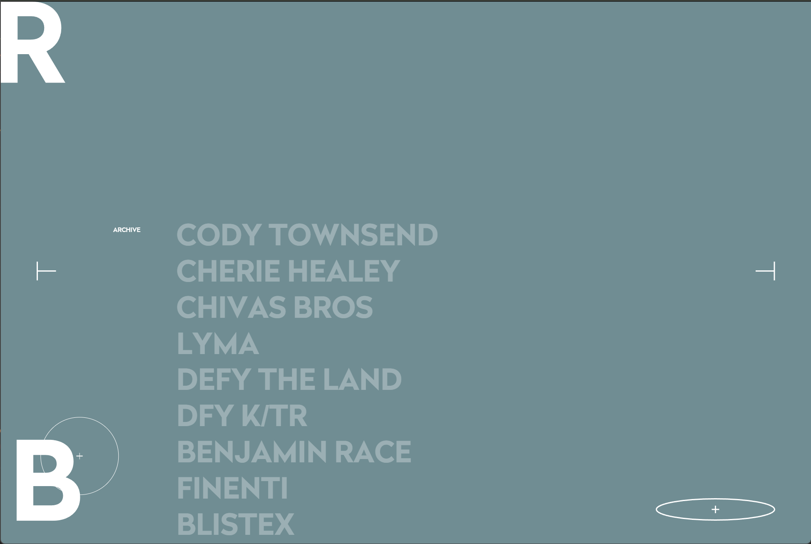

WHAT WAS THE FIRST THING YOU PAID ATTENTION TO WHEN INTERACTING WITH THE EXPERIENCE?
I FIRST NOTICED THE MINIMALIST FEEL, CLEAN AND NEAT FONT, AND THE
IMAGES AND VIDEOS THAT CAUGHT MY EYE. THE STARK CONTRAST BETWEEN THE
DARK BACKGROUND AND THE BRIGHT WHITE TEXT IMMEDIATELY CREATED A
SENSE OF SOPHISTICATION AND PROFESSIONALISM. THE LARGE 'R' LETTER IN
THE TOP LEFT CORNER ESTABLISHED A STRONG VISUAL IDENTITY, DRAWING MY
ATTENTION LIKE A LOGO OR BRAND MARK. I WAS ALSO STRUCK BY THE
DELIBERATE SPACING AND BREATHING ROOM AROUND ELEMENTS, WHICH GAVE
THE DESIGN A LUXURY FEEL DESPITE ITS MINIMALISM. THE CURSOR
INTERACTIONS THAT BEGAN AS SOON AS I MOVED MY MOUSE CREATED
IMMEDIATE ENGAGEMENT AND CURIOSITY ABOUT WHAT OTHER INTERACTIVE
ELEMENTS MIGHT BE PRESENT.

Figure 1: Rich Brown's homepage showcasing the minimalist design with large 'R' typography, clean layout, and professional aesthetic that immediately catches visitor attention.
SPEND TWO MINUTES WITH THE EXPERIENCE AND CREATE A LIST OF EACH OF YOUR DISCRETE ACTIONS.
- MOUSE-FOLLOWING INTERACTION
- SMOOTH TRANSITION INTERACTION THROUGH SCROLLING
- NATURAL INTERACTIONS ADDED THROUGH MOUSE HOVERING
- DESIGN THAT GUIDES USERS TO EASILY FIND DESIRED INFORMATION
- CLEAN LAYOUT PROVIDING USERS WITH VARIOUS OPTIONS (E.G., CLICKING 'R' IN THE TOP LEFT TO GO TO THE MAIN SCREEN OR CLICKING 'B' IN THE BOTTOM LEFT FOR DETAILED INFORMATION)
WHAT PART OF THE EXPERIENCE DID YOU SPEND THE MOST TIME ENGAGING WITH?
INITIALLY, I SPENT THE MOST TIME EXPLORING DETAILED INFORMATION
THROUGH MOUSE SCROLLING AFTER THE INITIAL LOADING FINISHED. I SPENT
TIME HOVERING THE MOUSE OVER OR MOVING IT TO INFORMATION I WANTED,
WHICH PROVIDED CLEAR INFORMATION RECOGNITION THROUGH MOUSE HOVERING
(E.G., WHEN THE MOUSE BECOMES A LARGE CIRCLE WITH A PLAY INDICATION,
CLICKING PROVIDES DETAILED INFORMATION ABOUT THAT CONTENT). I SPENT
THE MOST TIME WITH THE MOUSE INTERACTIONS THAT INTERACTED WITH
IMAGES (VIDEOS).
WHAT WAS THE MOST COMMON ACTION IN YOUR TWO MINUTE INTERACTION WITH THE EXPERIENCE?
I CONTINUOUSLY OBSERVED THE TEXT AND IMAGES (VIDEOS) THAT INTERACTED
WITH THE MOUSE WHILE SCROLLING AND MOVING THE CURSOR. PARTICULARLY,
THE WHITE LINES OR WHITE CIRCLES THAT APPEARED WHEN HOVERING OR
MOVING THE MOUSE MADE THE INTERACTION PROCESS MUCH MORE ENJOYABLE.
WHAT IS YOUR IMPRESSION OF THE INTENDED PRIMARY GOAL OF THE INTERACTIVE EXPERIENCE?
I THINK IT PROVIDED AN OPPORTUNITY TO EXPLORE NEW WAYS OF OBSERVING
INFORMATION OR EFFECTIVELY DELIVERING DESIRED INFORMATION. IN
PARTICULAR, INFORMATION DELIVERY THROUGH INTERACTION SEEMS TO HAVE
THE POWER TO IMPRINT INFORMATION ON USERS MORE EFFECTIVELY THAN
TRADITIONAL METHODS OF JUST READING, WRITING, OR READING ALOUD. THE
PRIMARY GOAL APPEARS TO BE CREATING A DIGITAL PORTFOLIO THAT
TRANSCENDS THE CONVENTIONAL STATIC PRESENTATION OF WORK. BY
INCORPORATING INTERACTIVE ELEMENTS, RICH BROWN TRANSFORMS WHAT COULD
BE A PASSIVE VIEWING EXPERIENCE INTO AN ACTIVE DISCOVERY PROCESS.
THIS APPROACH ALIGNS WITH CONTEMPORARY UX/UI PHILOSOPHY THAT VALUES
USER AGENCY AND ENGAGEMENT. THE EXPERIENCE SEEMS DESIGNED TO NOT
ONLY SHOWCASE RICH'S WORK BUT ALSO TO DEMONSTRATE HIS DESIGN ETHOS
AND TECHNICAL CAPABILITIES THROUGH THE VERY MEDIUM OF THE SITE
ITSELF. EVERY INTERACTION SERVES AS A SUBTLE PORTFOLIO PIECE,
REINFORCING HIS IDENTITY AS A DESIGNER WHO UNDERSTANDS HOW TO CREATE
MEANINGFUL, ELEGANT DIGITAL EXPERIENCES.
HOW DOES THE INTERACTIVE EXPERIENCE COMMUNICATE THIS PRIMARY GOAL?
IN RICH BROWN'S WEB PROJECT, THE INTERACTIVE EXPERIENCE THROUGH THE
MOUSE SEEMS TO BE HIGHLY VALUED. RATHER THAN INTERACTIONS THAT ARE
SIMPLY DISPLAYED, IT SEEMS THAT INTERACTIONS THAT ONLY OCCUR WHEN
THE USER ACTIVELY MOVES ENCOURAGE EXPLORATION OF THE WEB PROJECT'S
INFORMATION.
WHAT IS YOUR IMPRESSION OF HOW THE EXPERIENCE SHOULD BE INTERACTED WITH OVER TIME? (FOR HOW LONG AND HOW MANY DIFFERENT TIMES)
I THINK THE SITE SHOULD BE VISITED MULTIPLE TIMES, WITH EACH VISIT
OFFERING A DIFFERENT LAYER OF ENGAGEMENT. ON THE FIRST VISIT, I TEND
TO FOCUS ON THE NOTICEABLE INTERACTIONS. ESPECIALLY WITH
MOUSE-RELATED INTERACTIONS LIKE HOVERING, DRAGGING, AND IMAGES
(VIDEOS) & TEXT THAT INTERACT BASED ON MOUSE POSITION BEING SO
EYE-CATCHING, I FIRST EXPLORE VARIOUS MOVEMENTS AND FOCUS ON
INTERACTIONS. THIS INITIAL VISIT MIGHT LAST 5-10 MINUTES OF PURE
EXPLORATION AND PLAY. ON THE SECOND VISIT, I CAN FOCUS MORE ON
EXPLORING INFORMATION USING THE NOW-FAMILIAR INTERACTIONS, SPENDING
PERHAPS 15-20 MINUTES DELVING INTO THE ACTUAL CONTENT AND PORTFOLIO
PIECES. BY THE THIRD VISIT, I CAN COLLECT INFORMATION I MIGHT HAVE
MISSED, FOCUSING ON SPECIFIC PROJECTS OR DETAILS THAT ARE RELEVANT
TO MY INTERESTS OR NEEDS, WHICH MIGHT BE A SHORTER, MORE TARGETED
SESSION OF 5-10 MINUTES. THIS MULTI-VISIT APPROACH CREATES A
RELATIONSHIP WITH THE SITE THAT EVOLVES OVER TIME, SIMILAR TO HOW WE
MIGHT REVISIT A PHYSICAL SPACE AND NOTICE NEW DETAILS WITH EACH
RETURN. THE DESIGN SEEMS INTENTIONALLY LAYERED TO REWARD REPEATED
VISITS, WITH SOME SUBTLE INTERACTIONS AND CONTENT DETAILS THAT MIGHT
NOT BE APPARENT UNTIL THE USER HAS DEVELOPED A FAMILIARITY WITH THE
NAVIGATION SYSTEM AND OVERALL STRUCTURE.
HOW DOES THE INTERACTIVE EXPERIENCE COMMUNICATE HOW IT SHOULD BE INTERACTED WITH OVER TIME?
THE SITE DOESN'T EXPLICITLY DISPLAY MESSAGES LIKE "USE IT THIS WAY"
OR "VISIT AGAIN LATER," BUT BY ARRANGING EXPLANATORY TEXTS TO
CONTINUE DOWNWARD FROM THE FIRST SCREEN, IT NATURALLY GUIDES USERS
TO SCROLL DOWN. IT ALSO MAKES USERS RECOGNIZE WHICH PARTS ARE
INTERACTIVE THROUGH MOUSE HOVERING AND SHOWS A SCROLLBAR ON THE LEFT
TO HELP GAUGE HOW MUCH INFORMATION IS AVAILABLE. BY LISTING
INFORMATION IN A TABLE OF CONTENTS FORMAT, IT GUIDES USERS TO
COLLECT ONLY THE INFORMATION THEY WANT. THIS SEEMS TO BE A METHOD
FOR USERS TO REVISIT WHEN THEY NEED ADDITIONAL INFORMATION IN THE
FUTURE.
WHAT OTHER MEDIA FORMS (DIGITAL OR OTHERWISE) DOES THE EXPERIENCE REFERENCE?
RICH BROWN'S WEB PROJECT REFERENCES MULTIPLE MEDIA FORMS IN ITS
EXECUTION. PRIMARILY, IT FEELS LIKE WATCHING A SHORT FILM THAT PLAYS
ON REPEAT, LIKE A CONTINUOUSLY LOOPING FILM. THIS CINEMATIC QUALITY
IS EVIDENT IN THE THOUGHTFUL FRAMING OF CONTENT, THE CHOREOGRAPHED
TRANSITIONS, AND THE WAY VISUAL ELEMENTS ENTER AND EXIT THE
VIEWPORT. THERE ARE ALSO CLEAR INFLUENCES FROM PRINT MAGAZINE
LAYOUTS, PARTICULARLY HIGH-END FASHION OR DESIGN PUBLICATIONS, IN
THE TYPOGRAPHY CHOICES AND SPATIAL RELATIONSHIPS BETWEEN TEXT AND
IMAGES. THE INTERACTIVE ELEMENTS BORROW FROM VIDEO GAME DESIGN,
CREATING A SENSE OF AGENCY AND DISCOVERY AS USERS NAVIGATE THE
SPACE. THE MINIMALIST AESTHETIC REFERENCES MODERN ARCHITECTURAL
DESIGN, CREATING VIRTUAL "ROOMS" OF CONTENT WITH CLEAN LINES AND
DELIBERATE NEGATIVE SPACE. FINALLY, THERE'S AN ELEMENT OF GALLERY OR
MUSEUM EXHIBITION DESIGN IN HOW THE PROJECTS ARE PRESENTED—EACH
PIECE IS GIVEN ITS OWN SPACE AND CONTEXT, ALLOWING FOR CONTEMPLATION
BEFORE MOVING TO THE NEXT ITEM. THIS MULTI-REFERENTIAL APPROACH
CREATES A RICH, LAYERED EXPERIENCE THAT FEELS BOTH NOVEL AND
FAMILIAR.

Figure 2: Rich Brown's "BATHMATE" project display showcasing the influence of print magazine layouts with minimalist typography and editorial-style presentation.
WHAT DOES THIS REFERENCE/S COMMUNICATE TO YOU ABOUT HOW YOU SHOULD ACT WHEN ENGAGING WITH YOUR RESEARCH EXPERIENCE?
RICH BROWN'S WEB PROJECT GIVES USERS CHOICES. IT ENCOURAGES USERS TO
ACTIVELY EXPLORE INFORMATION DIRECTLY THROUGH VARIOUS INTERACTIONS
WHILE ENJOYING MOUSE INTERACTIONS, RATHER THAN JUST PASSIVELY
APPRECIATING. BEYOND TEXT AND INTERACTIONS, IT ALSO CREATES
CURIOSITY AND ENCOURAGES MOUSE HOVERING THROUGH CONTINUOUSLY
DISPLAYED VIDEOS.
WHAT DOES THIS REFERENCE/S COMMUNICATE TO YOU ABOUT HOW YOU SHOULD FEEL WHEN ENGAGING WITH YOUR RESEARCH EXPERIENCE?
THIS WEBSITE FELT LIKE VIEWING A PROFESSIONAL PORTFOLIO. IT WAS A
WEB PROJECT THAT HIGHLIGHTED THE CREATOR'S PERSONALITY AND
SENSIBILITY, AND THIS SITE CREATES CURIOSITY AND NUMEROUS
INSPIRATIONS FOR USERS. IT GUIDES USERS TO SELECT AND CURIOUSLY
EXPLORE RATHER THAN COLLECTING INFORMATION THROUGH CONVENTIONAL
READING. TO PREVENT A STIFF OR BLOCKED FEELING, IT ADDS INTERACTIONS
TO TEXT AND IMAGES (VIDEOS) WITH EVERY MOUSE MOVEMENT AND SCROLL,
MAKING THEM MOVE NATURALLY.
WHAT IS THE MOST FRUSTRATING PART OF THE INTERACTION TO YOU AND WHAT MAKES THAT PART FRUSTRATING?
THE MOST FRUSTRATING PART OF THE INTERACTION WAS THE INITIAL LACK OF
CLEAR NAVIGATION CUES. AT FIRST, I DIDN'T RECOGNIZE THE NEED TO
SCROLL DOWN AND JUST STARED AT THE MAIN SCREEN. HAVING ENCOUNTERED
THIS SITE WITHOUT PRIOR KNOWLEDGE, I WAS JUST CURIOUS ABOUT THE
MOUSE INTERACTION AND DIDN'T THINK TO IMMEDIATELY LOOK FOR
INFORMATION. THIS CREATED A MOMENT OF UNCERTAINTY THAT MOMENTARILY
BROKE MY ENGAGEMENT WITH THE SITE. THIS ISSUE REFLECTS A BROADER
TENSION IN MINIMALIST DESIGN BETWEEN AESTHETIC CLEANLINESS AND
FUNCTIONAL CLARITY—WHILE THE ABSENCE OF OBVIOUS NAVIGATION ELEMENTS
CONTRIBUTES TO THE CLEAN VISUAL APPEAL, IT ALSO CREATES A POTENTIAL
BARRIER TO ENTRY FOR FIRST-TIME VISITORS. ADDITIONALLY, THE DESIGN
OF SECONDARY MENUS ACCESSIBLE THROUGH MOUSE HOVERING IN THE BOTTOM
RIGHT CREATED ANOTHER POINT OF FRICTION. THESE MENUS CONTAIN
HYPERLINKS THAT CAN DIRECTLY NAVIGATE TO INDIVIDUAL PROJECTS OR
PAGES, BUT THERE IS INSUFFICIENT INFORMATION ABOUT WHAT THESE
ABBREVIATED LABELS REPRESENT. THE RELIANCE ON INSIDER ABBREVIATIONS
ASSUMES A FAMILIARITY THAT MOST NEW VISITORS WON'T HAVE; EVEN SIMPLE
ICONS WOULD HAVE PROVIDED BETTER SIGNPOSTING THAN THESE CRYPTIC TEXT
LABELS. I ONLY UNDERSTOOD WHAT THESE MENU ITEMS REFERENCED AFTER
CLICKING THROUGH ALL OF THEM—AN INEFFICIENT PROCESS OF TRIAL AND
ERROR THAT COULD EASILY LEAD TO VISITOR ABANDONMENT. THIS DESIGN
CHOICE PRIORITIZES VISUAL MINIMALISM OVER FUNCTIONAL TRANSPARENCY,
CREATING AN UNNECESSARY LEARNING CURVE THAT MIGHT DETER LESS PATIENT
OR LESS CURIOUS USERS FROM FULLY EXPLORING THE SITE'S CONTENT.
WHAT IS THE MOST SATISFYING PART OF THE INTERACTION TO YOU AND WHAT MAKES THAT PART SATISFYING?
THE MOST SATISFYING PART OF THE INTERACTION WAS THE THOUGHTFUL
INTEGRATION OF SUBTLE MOTION RESPONSES TO BOTH MOUSE MOVEMENTS AND
SCROLLING ACTIONS. EACH INTERACTION FELT DELIBERATELY DESIGNED
RATHER THAN ARBITRARILY IMPLEMENTED. THE TRANSITIONS BETWEEN CONTENT
SECTIONS WERE PARTICULARLY REWARDING—THEY UNFOLDED WITH A SMOOTH,
CINEMATIC QUALITY THAT CREATED A SENSE OF JOURNEY THROUGH THE
DIGITAL SPACE. THE WAY ELEMENTS RESPONDED TO MY MOUSE MOVEMENTS GAVE
THE EXPERIENCE A TACTILE QUALITY THAT IS OFTEN MISSING FROM DIGITAL
INTERFACES, ALMOST AS IF THE PIXELS WERE PHYSICALLY RESPONDING TO MY
PRESENCE. WHAT MADE THESE INTERACTIONS ESPECIALLY SATISFYING WAS
THEIR BALANCED IMPLEMENTATION—RESPONSIVE ENOUGH TO FEEL ALIVE AND
ENGAGING, BUT SUBTLE ENOUGH TO AVOID BECOMING DISTRACTING OR
GIMMICKY. THE WHITE LINES AND CIRCLES THAT APPEARED DURING HOVER
STATES SERVED BOTH AN AESTHETIC AND FUNCTIONAL PURPOSE, CREATING
VISUAL DELIGHT WHILE SIMULTANEOUSLY INDICATING WHICH ELEMENTS WERE
INTERACTIVE. THIS DUAL-PURPOSE DESIGN DEMONSTRATED A SOPHISTICATED
UNDERSTANDING OF INTERACTION DESIGN PRINCIPLES, WHERE BEAUTY AND
UTILITY ARE NOT COMPETING FORCES BUT COMPLEMENTARY ASPECTS OF A
COHESIVE EXPERIENCE. THE SATISFACTION DERIVED FROM THESE
INTERACTIONS STEMS FROM THEIR ABILITY TO CREATE A SENSE OF DIALOGUE
BETWEEN USER AND INTERFACE—EACH ACTION I TOOK RECEIVED A MEANINGFUL
RESPONSE, CREATING A CONVERSATIONAL FLOW THAT MADE ME FEEL LIKE AN
ACTIVE PARTICIPANT RATHER THAN A PASSIVE VIEWER. THIS RESPONSIVE
QUALITY TRANSFORMED WHAT COULD HAVE BEEN A SIMPLE
INFORMATION-GATHERING TASK INTO AN ENGAGING EXPLORATION, ENCOURAGING
ME TO INTERACT MORE WITH THE CONTENT AND ULTIMATELY FORMING A
STRONGER CONNECTION WITH THE PRESENTED WORK AND THE DESIGNER'S
VISION.

Figure 3: Rich Brown's archive page displaying project links with the interactive design elements that respond to user interaction, demonstrating how interactivity enhances the browsing experience.